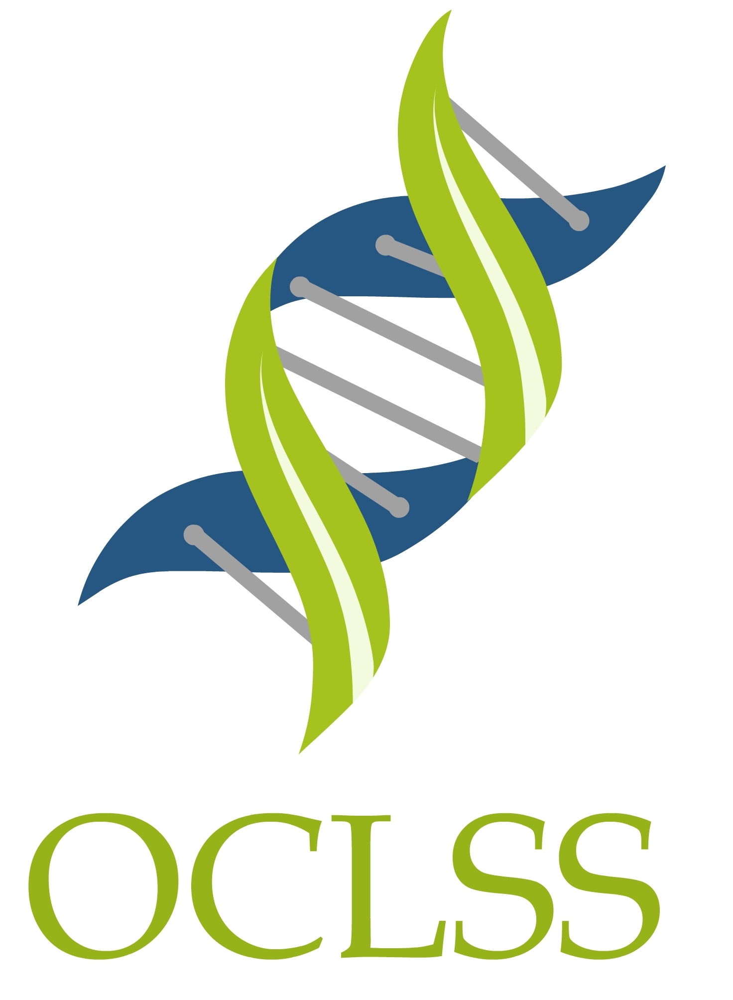
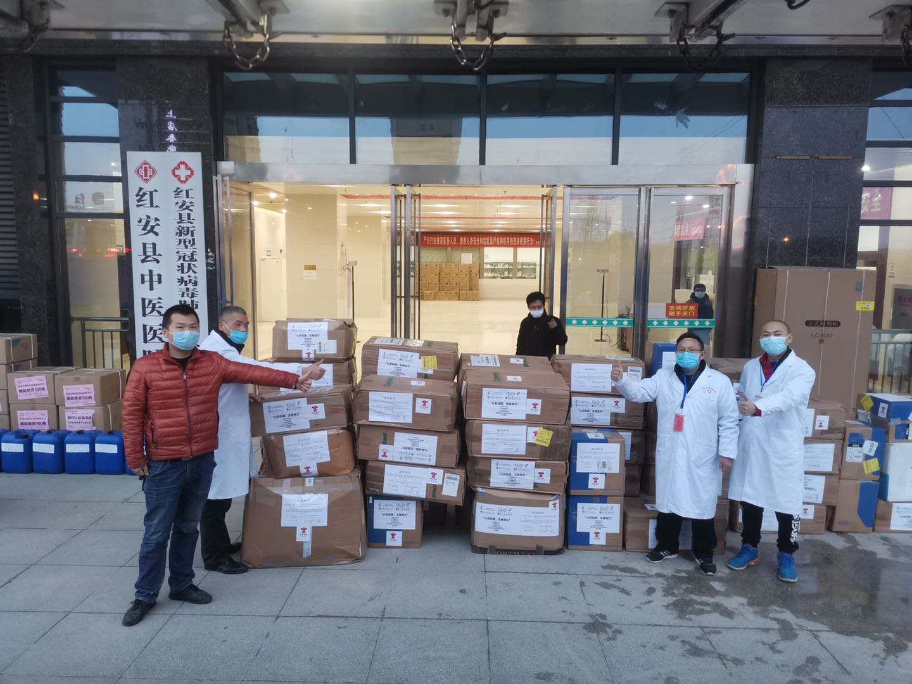
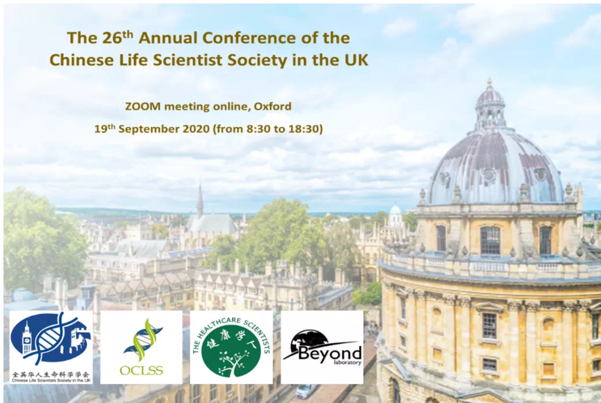
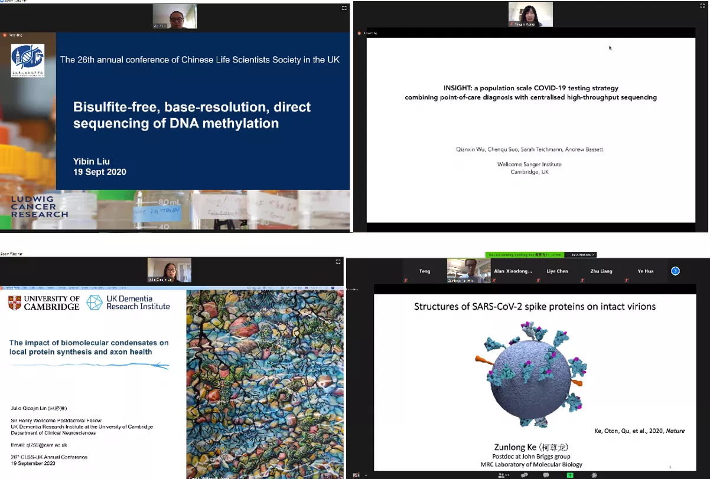
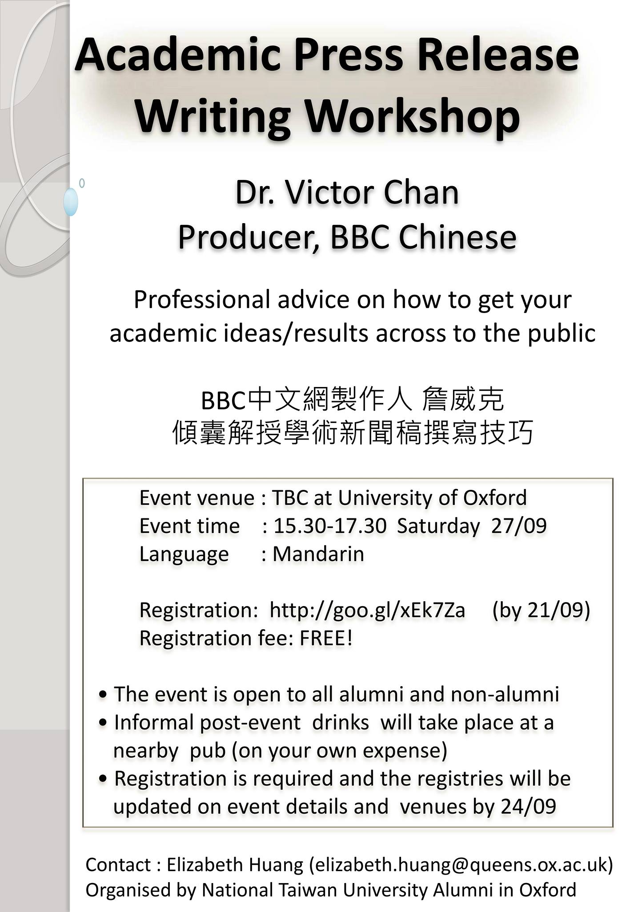
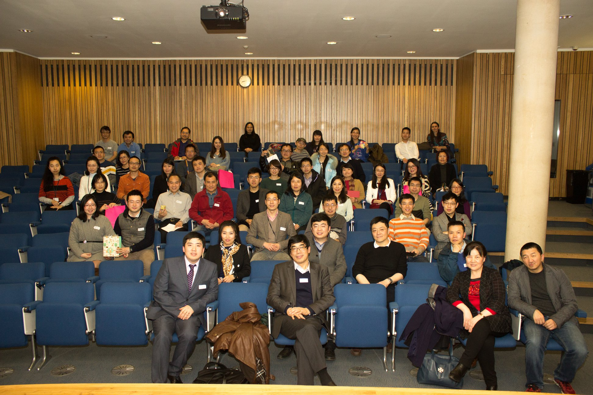
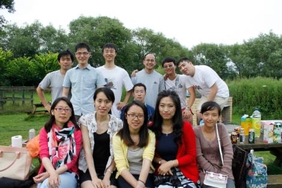

【OCLSS招新】2020-21牛津华人生命科学协会招新
1.组织介绍
OCLSSS（牛津华人生命科学协会）成立于2013年，由生命科学学生学者共同组成，致力于为生命科学相关学科的学者和学生们打造高水准的学术交流平台。其集结学术大牛，促进大家交流合作、分享最新科研动态，使学术交流畅通无阻。
作为牛津大学生命科学领域最大的华人组织，本协会致力于构建连接牛津地区生命科学学者学生的交流的桥梁，打造良好科研交流平台，积极承办开展学术会议，开展学术讨论。目前的活动多集中在Headington, 也非常欢迎在South Park附近工作学习的同学能加入我们，共同完善这一学术交流平台。于此同时，协会亦会安排娱乐活动，为大家工作之余增添乐趣。。
在疫情期间，为了帮助祖国抗击新冠疫情，OCLSS募集资金约1300磅、与全英清华校友会通力合作购买医护用品驰援祖国，为祖国奉献了牛津学生学者的绵薄之力。

近期由本协会承办的第26届英国华人生命科学协会年度会议于9月19日圆满举行，由于疫情影响，该会议在ZOOM上举办，共超过300名来自中英两国的生命科学领域包括皇家科学院/工程学院院士、教授、学者、学生及相关产业从业人员参会。同时我们有幸邀请了中国驻英大使馆科技处公使衔参赞蒋苏南先生，大使馆教育处一等秘书王静女士和牛津大学路德维格癌症研究所所长皇家科学院及医学院院士卢欣教授出席开幕式并致辞。


全英华人生命科学年会线上会议截图
除了学术会议这类大型活动外OCLSS更多是举办一些定期的小型茶歇分享会/研讨会。届时我们邀请老师或同学分享自己的学术经验和职业相关技能。


茶歇分享会

新闻稿写作撰写技巧分享
除了为广大学生学者组织丰富的学术活动，我们同时还兼顾工作学习之余的娱乐活动，如元宵联欢晚会、春游、BBQ、篮球比赛等

元宵联欢晚会留影


户外烧烤
2.部门介绍
宣传部
宣传部是OCLSS与外部连接最重要的桥梁，需要负责运营OCLSS的社交媒体账号，包括微信公众号、Facebook和官网，为OCLSS举办的各类活动撰写推文、制作海报等。欢迎有兴趣提升自己写作、美工、网站设计维护或社交平台运营等技能的同学。
组织部
组织部负责策划并调度OCLSS每年承办的各种会议。希望参与策划活动的小伙伴们，组织部是一个很好的选择。
外联部
外联部负责与外部企业建立联系，寻求资源支持。在这里，成员需要与商业公司建立良好沟通，与其谈合作、拉赞助，筹集OCLSS的活动资金。这个部门的小伙伴们不仅能够提升自己的谈判能力，也可以为大家提供科研外的企业资源。如果你具有良好的沟通能力和执行力，欢迎你加入外联部。
财务部
财务部的主要职责是管理OCLSS银行账号，制定活动预算、记账、报销、开具发票等。财务部需要对细心和有财务知识积累的人，有相关经历或希望积累财务相关能力，欢迎你的加入。
3.报名方式
报名条件：牛津地区学生学者，生命科学相关者优先。（本科生、硕士、博士、博士后、访问学者、交换生均可报名。）
报名截止日期：2020年10月30日
招新咨询：
扫描以下群二维码，会有专人为你解答疑惑。